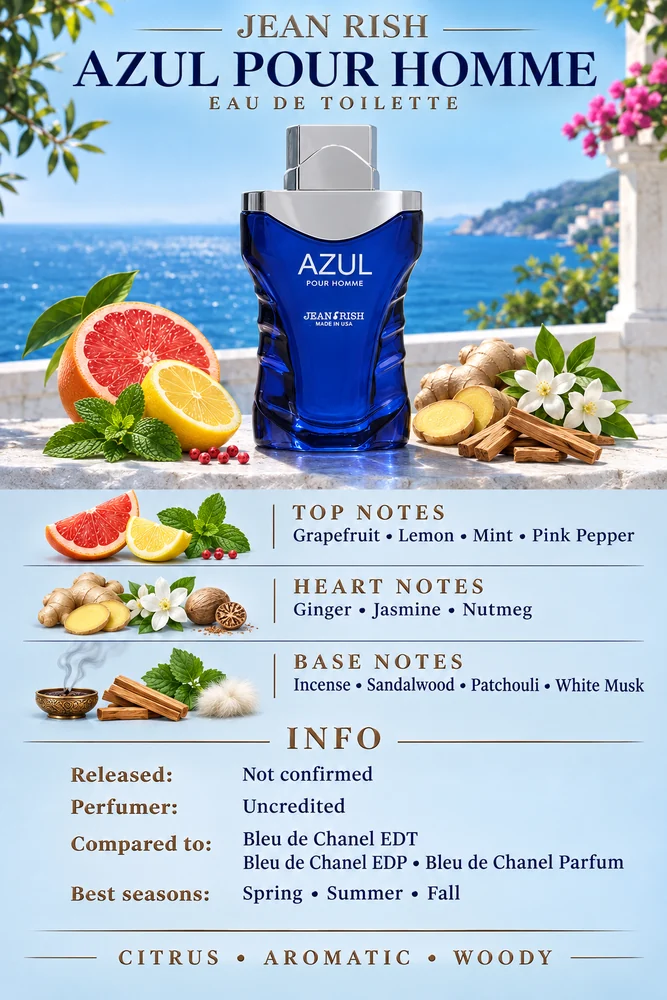
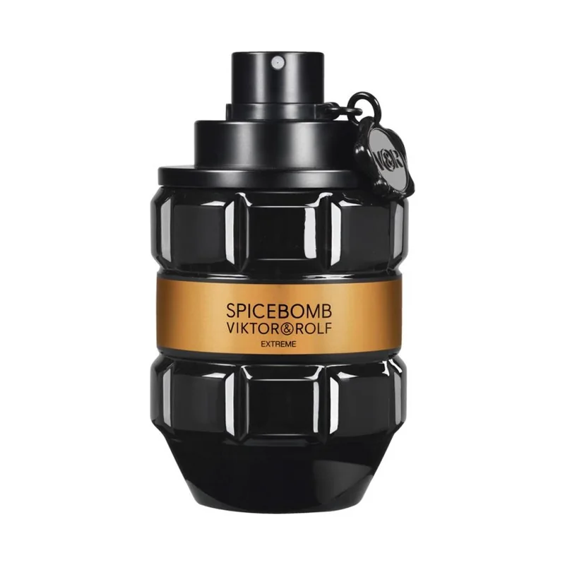

Jean Rish
Azul Pour Homme Eau de Toilette
γ Gamma Inspired by · Eau de Toilette In collection
Randy's rating5/10
Public rating—/10
Overall R—/21
Normalized N—
R and N are left blank because the public rating is missing (there is no dedicated Fragrantica or Parfumo page). How scores work
Notes
Top notes
- grapefruit
- lemon
- mint
- pink pepper
Heart notes
- ginger
- jasmine
- nutmeg
Base notes
- incense
- sandalwood
- patchouli
- white musk
Details
| House | Jean Rish |
|---|---|
| Type | Inspired by · γ Gamma |
| Concentration | Eau de Toilette |
| Released | — |
| Perfumer | — |
| Scent family | Spicy, Woody, Citrus |
| Best seasons | Spring, Summer, Fall |
| Similar to | Bleu de Chanel Eau de Toilette Bleu de Chanel Eau de Parfum Bleu de Chanel Parfum |
Sources
No dedicated Fragrantica or Parfumo page for Azul Pour Homme as of 2026-11-06. Jean Rish is listed on Fragrantica with other 2016 names (including Blue Intense and Citrus Intense) but not this one. Retailer star ratings were not used. public_rating left blank.
Other Suggestions
-
 DiorSauvage Eau de ParfumRandy9Public 8N 0.852
DiorSauvage Eau de ParfumRandy9Public 8N 0.852 -

Viktor & RolfSpicebomb ExtremeRandy8.75Public 9N 0.887 -
 Salvatore FerragamoUomo Signature Eau de ParfumRandy7.5Public 8N 0.774
Salvatore FerragamoUomo Signature Eau de ParfumRandy7.5Public 8N 0.774 -
 Ahmed Al MaghribiIgnite Oud Eau de ParfumRandy8.75Public 9N 0.887
Ahmed Al MaghribiIgnite Oud Eau de ParfumRandy8.75Public 9N 0.887 -
 French AvenueVulcan Feu Eau de ParfumRandy9Public 8N 0.852
French AvenueVulcan Feu Eau de ParfumRandy9Public 8N 0.852